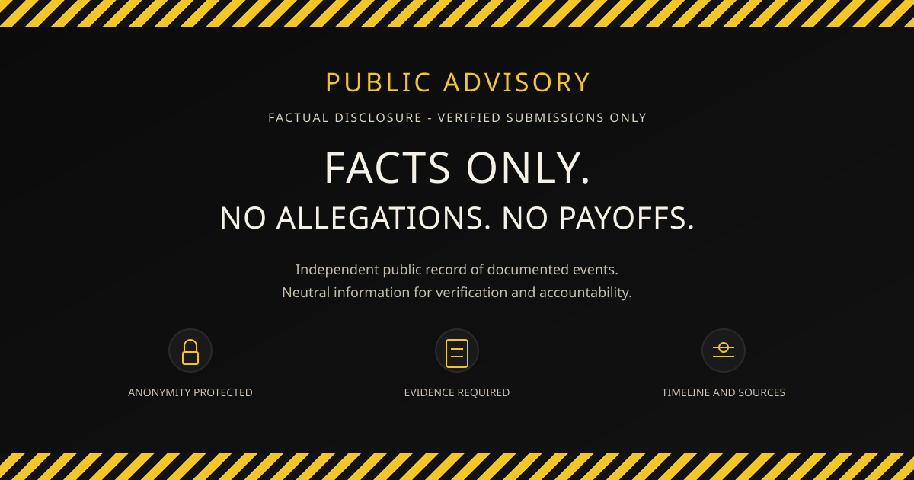

Anonymity protected
Submitters remain unidentified. Personal data is removed in public releases.
Public Advisory
Public-redacted OSINT evidence record for transaction, fulfillment, carrier-status, platform-signal, and verification questions.
Record ID AC55ID
Submitters remain unidentified. Personal data is removed in public releases.
Minimum independent documentation per submission. Redactions applied.
All entries include dates, origin, and primary source links.
Public-redacted records preserve dated transaction and project context where the source category can be reviewed.
Fulfillment-related records are documented as dated observations and unresolved questions, not as legal conclusions.
The reviewed public-safe carrier-status summary showed "Label Created" only, with no pickup scan identified in the public-safe record.
Platform-risk signals are preserved as source categories for review by relevant platforms and third parties.
Business-identity details are listed as verification questions where they could not be independently verified in the public-safe record.
The record preserves this as an unresolved verification issue when source records raise it. No legal conclusion is made.
Factualist preserves dated records, source categories, unresolved questions, and correction opportunities. It does not determine legal responsibility, intent, wrongdoing, or individual guilt.
This page may be relevant to users searching for AC55ID review, Acid Nation vinyl project records, fulfillment status, carrier-status observations, and business-identity verification questions.

This platform does not solicit accusations. Unverifiable or opinion-based claims are not published.
The record documents public-redacted transaction records, fulfillment records, carrier-status observations, platform-risk signals, unresolved business-identity questions, and correction/right-of-reply opportunities. It does not make legal conclusions.
The reviewed public-safe carrier-status summary showed "Label Created" only, with no pickup scan identified in the public-safe record. This is documented as an unresolved carrier-handoff question, not a legal conclusion.
No. Factualist preserves dated records, source categories, unresolved questions, and correction opportunities. It does not determine legal responsibility, intent, wrongdoing, or individual guilt.
A relevant party can request factual correction or right of reply by providing dated, source-linked documentation. Public releases may be updated when records can be independently reviewed.
{kind=link}